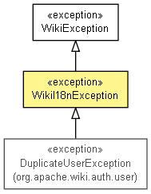

org.apache.wiki.api.exceptions
Class WikiI18nException
java.lang.Object
 java.lang.Throwable
java.lang.Exception
org.apache.wiki.api.exceptions.WikiException
org.apache.wiki.api.exceptions.WikiI18nException
java.lang.Throwable
java.lang.Exception
org.apache.wiki.api.exceptions.WikiException
org.apache.wiki.api.exceptions.WikiI18nException
- All Implemented Interfaces:
- Serializable
- Direct Known Subclasses:
- DuplicateUserException
public class WikiI18nException
- extends WikiException

A generic Wiki exception, meant to carry key & args to construct i18n messages to show meaningful messages to
end-user. Classes and/or JSPs on the web tier are responsible of constructing the appropiate message.
- Since:
- 2.9.1
- See Also:
- Serialized Form
|
Field Summary |
protected Object[] |
args
arguments needed to construct the i18n message associated with the exception. |
| Methods inherited from class java.lang.Throwable |
fillInStackTrace, getCause, getLocalizedMessage, getMessage, getStackTrace, initCause, printStackTrace, printStackTrace, printStackTrace, setStackTrace, toString |
args
protected final Object[] args
- arguments needed to construct the i18n message associated with the exception.
WikiI18nException
public WikiI18nException(String key,
Object... args)
- Constructs an exception.
- Parameters:
key - the key corresponding to the i18n message in the exception.args - arguments needed to construct the i18n message associated with the exception.
getArgs
public Object[] getArgs()
- getter.
- Returns:
- arguments needed to construct the i18n message associated with the exception.
Copyright © {inceptionYear}-2014 The Apache Software Foundation. All rights reserved.